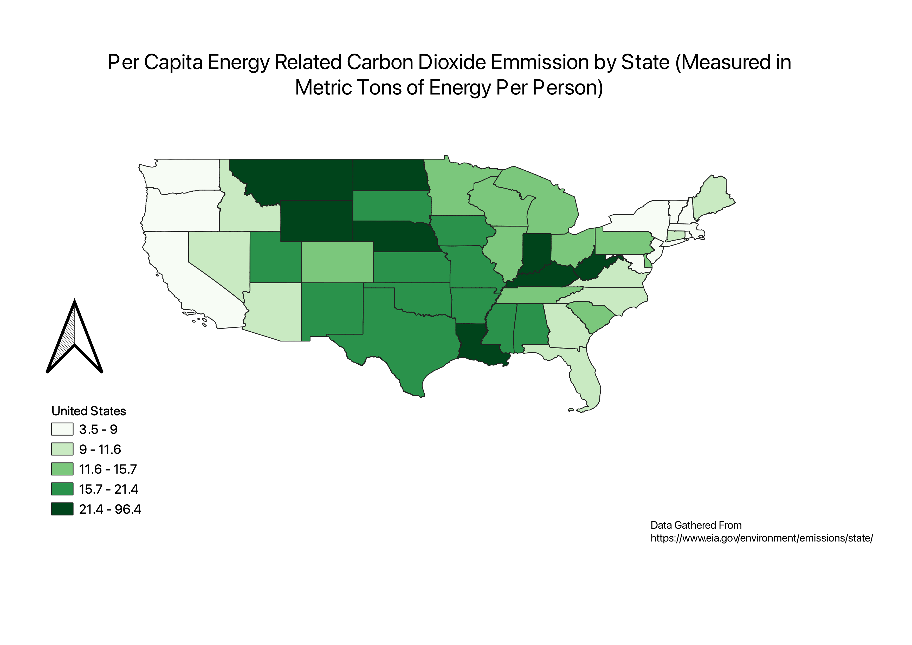

Homework 7
Serdar Calikoglu
For my map I gathered the Per Capita CO2 Energy Related Emmission By State. Using this data, I joined it with the attribute data in my United States Tigerline shapefile. The chloropleth that was created uses the metric tons of energy per capita in each state as the value. I chose this topic because I was interested in seeing how CO2 emmissions compared across the states. The resulting chloropleth is useful because it shows how in smaller states, the energy related emmissions per person tends to be higher.However, there is a good amount of variation between states with big populations which can tell us about how the carbon footprint between people in the U.S vary.

Data used for this project
CSV dataset
Link to shapefile